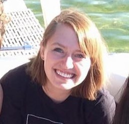

2015 - 2016 Officers
-

Faculty Advisor- Sonia Fahmy
fahmy@purdue.eduSonia Fahmy is the faculty advisor for CSWN. Sonia started off her role as Faculty Advisor with Barbara Clark in fall 2013 and took over as the sole advisor in October of 2015 once Barb retired. Sonia is a professor in the CS department at Purdue University.
-

Vice President - Noah Field
fieldn@purdue.eduNoah Field is a Sophomore and the Vice President for CSWN. She's at Purdue studying Computer Science, and is also involved in Purdue Music Gaming Club and Purdue ACM SIG App.
-
Secretary - Akanksha Tripathy
tripath1@purdue.eduAkanksha Tripathy is our Secretary of CSWN. She is currently a Sophomore in Computer Science, also minoring in Economics. She moved to Indiana from Bangalore, India to pursue a degree CS because it is her dream.
-

Webmaster - Bridgette Kuehn
bkuehn@purdue.eduBridgette Kuehn is the webmaster of CSWN. She is currently a Senior in Computer Science with a focus in Machine Intelligence. She is also minoring in film and has accepted a job for a Program Management position at Microsoft for the coming fall. She is involved in CSWN because she loves to see women in technology grow together!
-
President - Lisa Campbell
campb215@purdue.eduLisa Campbell is a Sophomore and is the CSWN president for 2015-2016. Before coming to Purdue, she worked at a start up company out of her hometown of Carmel, IN, managing their website. She loves puppies and making jokes too.
-

Treasurer - Kristen Hlava
khlava@purdue.eduKristen Hlava, our treasurer, is a Sophomore in CS with a minor in biology, and is very interested in healthcare technology. She is also involved in WISP and Purdue's concert bands.
-

Corporate Liaison - Eehita Parameswaran
eparames@purdue.eduEehita Parameswaran, our Corporate Liaison, is a Sophomore majoring in Computer Science. The basic premise of Computer Science that advocates 'making things simple' resonates immensely with Eehita, and she gets easily enthused by anything that has an association with the field of Computer Science. She loves math and believes her passion for problem-solving has helped develop her interest in coding. She is particularly interested in Artificial Intelligence and would like to dabble with projects relating to the same.
-

Founding Member - Barbara Clark
The woman that started it all, Barbara Clark founded the CSWN we know today. By doing so, she has brought hundreds of women together under the bond of computer science. Barb dedicated her time at Purdue making sure that CSWN was alive and thriving, and she remained the Faculty Advisor for CSWN until she retired in 2014.